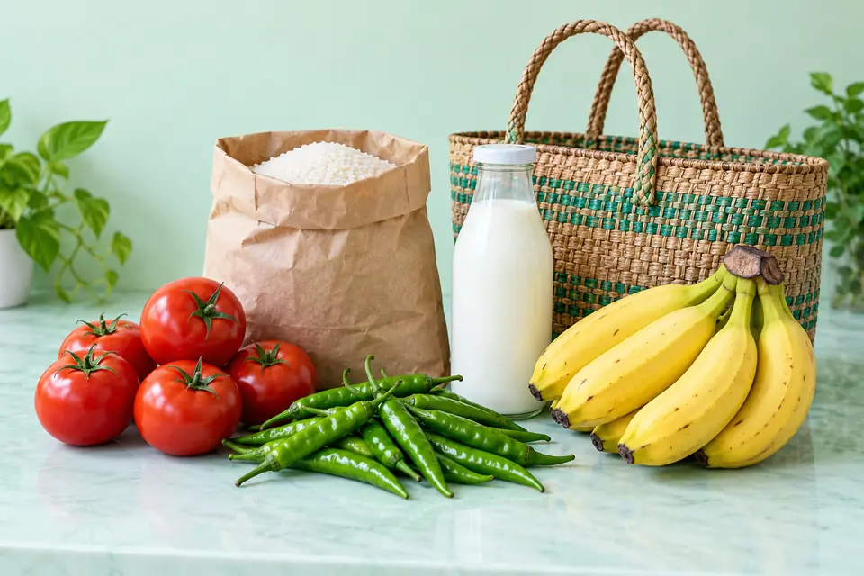

01 / Full-stack webOngoing project
Nellai Mart
Product discovery for nearby local stores.
A hyperlocal platform for exploring store products and comparing prices. The project connects a React interface with Express APIs and MongoDB Atlas.
Project notes
- Problem
- Local product information and prices are spread across individual shops.
- Build
- Product listings, categories, shop discovery, a backend product API, and database connectivity.
- Current focus
- Admin and employee authentication, search, Excel synchronization, and deployment configuration.